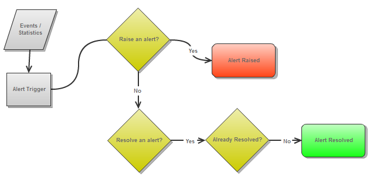

The alert mechanism provides the ability to receive alerts on various problematic conditions at runtime by using the Administration and Monitoring API. The alerts give indication for the "health state" of the system.
The alerts rules are running within the Admin instance which the user created. GigaSpaces does not run an alert service that is running behind the scenes. If you would like to register for alerts in your production system, the recommended way to do it is to deploy your alert listener to the GigaSpaces The Runtime Environment in the form of a processing unit.
The Administration and Monitoring API provides events and statistics on top of which "rules' can be applied to trigger an alert when required.
Events such as ReplicationStatusChangedEvent indicate that the ReplicationStatus has changed (e.g. ACTIVE, DISABLED, DISCONNECTED). From this event, an alert trigger can be written to raise an alert if replication has disconnected, and to resolve an alert once replication has reconnected (ref. Predefined Alerts below).
Statistics such as OperatingSystemStatistics arrive as an OperatingSystemStatisticsChangedEvent, from which you can extract statistics - in example CPU utilization statistics. An alert trigger can be written to raise an alert if the CPU utilization has crossed a threshold (e.g. 80%), and to resolve an alert once CPU utilization has crossed below a threshold (e.g. 60%).
These alerts provide for better supportability and easier troubleshooting.
The following diagram illustrates a simple flow of events/statistics sent to the "Alert Trigger' which checks if the state answers the condition to raise an alert or to resolve an alert. Notice that an alert may be raised multiple times until it is finally resolved.

| Alert Type | Default Thresholds |
|---|---|
| CPU Utilization Alert | - Raise an alert if CPU utilization is above 80% for 1 minute - Resolve alert if CPU utilization is below 60% for 1 minute |
| Physical Memory Utilization Alert | - Raise an alert if physical memory utilization is above 80% for 1 minute - Resolve alert if physical memory utilization is below 60% for 1 minute |
| Heap Memory Utilization Alert | - Raise an alert if JVM heap memory utilization is above 80% for 1 minute - Resolve alert if JVM heap memory utilization is below 60% for 1 minute |
| Garbage Collection Alert | - Raise an alert if a GC pause takes more than 10 seconds - Resolve alert if GC pause takes less than 1 second |
| Replication Channel Disconnection Alert | - Raise an alert if replication channel has been disconnected between source and target Space - Resolve alert if replication channel is reconnected between source and target Space |
| Replication Redo Log Overflow to Disk Alert | - Raise an alert if replication redo log has exceeded its memory capacity and has over flown to disk. - Resolve alert if replication redo log no longer uses the disk |
| Replication Redo Log Size Alert | - Raise an alert if replication redo log size goes 100,000 packets - Resolve alert if replication redo log size goes below 1,000 packets |
| Mirror Persistence failure Alert | - Raise an alert if Mirror Space failed to persist due to an error (e.g. a DB error). The alert is reported via the replication channel - Resolve alert if Mirror Space manages to persist to the DB for first time after the alert has been raised. |
The static configuration for the predefined alerts mentioned above is defined in the
For example, the following is a snippet that represents the configuration of the CPU Utilization Alert. The alert is configured with a high threshold of 80% and a low threshold of 60% and a period of 1 minute. An alert will be raised if CPU utilization in a certain host in the GigaSpaces cluster crosses 80% for a period of 1 minute. A raised alert will be resolved if the CPU utilization goes below 60% for 1 minute.
<alert class="org.openspaces.admin.alert.config.CpuUtilizationAlertConfiguration"
enabled="true">
<property key="high-threshold-perc" value="80" />
<property key="low-threshold-perc" value="60" />
<property key="measurement-period-milliseconds" value="60000" />
</alert>
The class attribute above is the implementation class used to configure the settings of this alert. When configuring enabled="false" alerts of this type will not be triggered, until enabled again (at runtime).
Note that some alert triggers define that an alert is raised each time a certain high threshold is crossed for example. This means that can be are multiple raised alerts at the same time, each indicating its own utilization reading at the time it was triggered. On the other hand, there can only be one resolving alert, which "resolves' the already raised alert/s.
Since
You can view alerts in the Web Management Console. For more information, refer to Viewing Alerts in the administration guide.
You can also view alerts on services using the Ops Manager. For more information, see the
Alerts can be consumed using a registered event listener by registering with the AlertManager component (which is part of the Administration and Monitoring API. The listener will be notified of alerts that have been triggered.
See the following pages in the API documentation:
Admin admin = new AdminFactory().createAdmin();
AlertManager alertManager = admin.getAlertManager();
alertManager.configure(new XmlAlertConfigurationParser("alerts.xml").parse());
alertManager.getAlertTriggered().add(new AlertTriggeredEventListener() {
public void alertTriggered(Alert alert) {
System.out.println(alert);
}
});
The alerts.xml file argument specifies the file which holds the configuration settings.
The file argument can be:
The default parser parses the XML file. If needed, you can implement a different parser (see AlertConfigurationParser interface).
The alertTriggered method is called upon each alert triggered.
The org.openspaces.admin.alert.Alert instance includes the following set of properties:
| Name | Description | Value |
|---|---|---|
| Description | The readable description of the alert | e.g. CPU Utilization crossed a threshold of 80% |
| Timestamp | The date and time of the alert occurred | System.currentTimeMillis() |
| Severity | The alert severity | SEVERE, WARNING, INFO |
| Status | The alert status | ESCALATED,RAISED, SUPPRESSED,RESOLVED , NA |
| UID | A unique identifier for this alert | component hash code with an incrementing number |
| Component UID | The grid component UID that the alert has been triggered for | e.g. "service-id: 15f4b0b4-3a78-413f-bd3a-429a50dcdf05" |
| Group UID | A unique identifier for a set of alerts triggered for the same component, e.g. two different machines will have a different group UID if their CPU utilization raised an alert.But for each machine, the raised alerts and resolved alert for CPU utilization will have the same group UID |
e.g. "aafb1222-826c3cbb-73c6-4903-bdc1-d858f1324e12" |
| Config | The configuration properties set for this alert | |
| Properties | Any runtime properties that could be extracted and are relevant information for this alert | e.g. host name, host address, memory utilization,etc. |
See the following pages in the API documentation:
The static alert configurations are parsed using the XmlAlertConfigurationParser. This pre-configures the alert manager with all the alerts found in the alerts.xml.
Admin admin = new AdminFactory().createAdmin();
AlertManager alertManager = admin.getAlertManager();
alertManager.configure(new XmlAlertConfigurationParser("alerts.xml").parse());
...
Alert configuration settings can be changed (at runtime) for a pre-configured/pre-defined alert type.
A pre-configured but disabled alert can be easily enabled, but an already enabled alert type will need to be disabled prior to setting a new configuration.
For a predefined but disabled alert, enable it by specifying the alert Class type. The configuration settings that were predefined will be used.
alertManager.enableAlert(CpuUtilizationAlertConfiguration.class);
Too disable an existing alert (yet keep its configuration), use the following code:
alertManager.disableAlert(CpuUtilizationAlertConfiguration.class);
For a predefined alert, obtain the current configuration, change the settings and re-configure the AlertManager.
In the background, the enabled alert will be disabled, set and re-enabled with the new configuration.
CpuUtilizationAlertConfiguration config = alertManager.getConfig(CpuUtilizationAlertConfiguration.class);
config.setHighThresholdPerc(85);
alertManager.configure(config);
If predefined settings need to be changed, get the configuration, change the settings, enable and re-configure.
CpuUtilizationAlertConfiguration config = alertManager.getConfig(CpuUtilizationAlertConfiguration.class);
config.setHighThresholdPerc(85);
config.setEnabled(true); //don't forget
alertManager.configure(config);
For an alert which wasn't defined in the original set of alerts, create a new configuration with required settings and call configure.
CpuUtilizationAlertConfiguration config = new CpuUtilizationAlertConfiguration();
config.setHighThresholdPerc(85);
config.setLowThresholdPerc(70);
config.setMeasurementPeriod(60, TimeUnit.SECONDS);
config.setEnabled(true);
alertManager.configure(config);
AlertConfigurerFor a more fluent API, AlertConfigurer implementations provide chaining methods.
final AlertManager alertManager = admin.getAlertManager();
alertManager.setConfig(
new CpuUtilizationAlertConfigurer()
.raiseAlertIfCpuAbove(80)
.resolveAlertIfCpuBelow(60)
.create()
);
alertManager.enableAlert(CpuUtilizationAlertConfiguration.class);
Since 8.0.2 the enabled indication has been added to the AlertConfigurer API.
This lets you use the AlertManager.configure(AlertConfiguration ...) method to configure one or more alert configurations following the same fluent API usage as above.
This code sample does exactly the same as the code above.
final AlertManager alertManager = admin.getAlertManager();
alertManager.setConfig(
new CpuUtilizationAlertConfigurer()
.raiseAlertIfCpuAbove(80)
.resolveAlertIfCpuBelow(60)
.enabled(true) //since 8.0.2
.create()
);